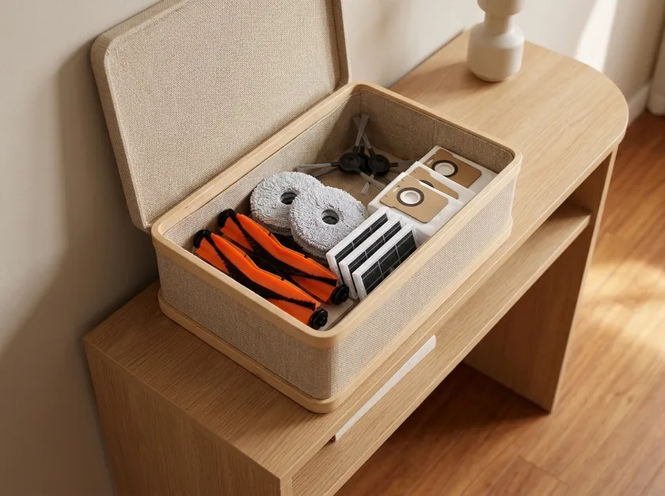
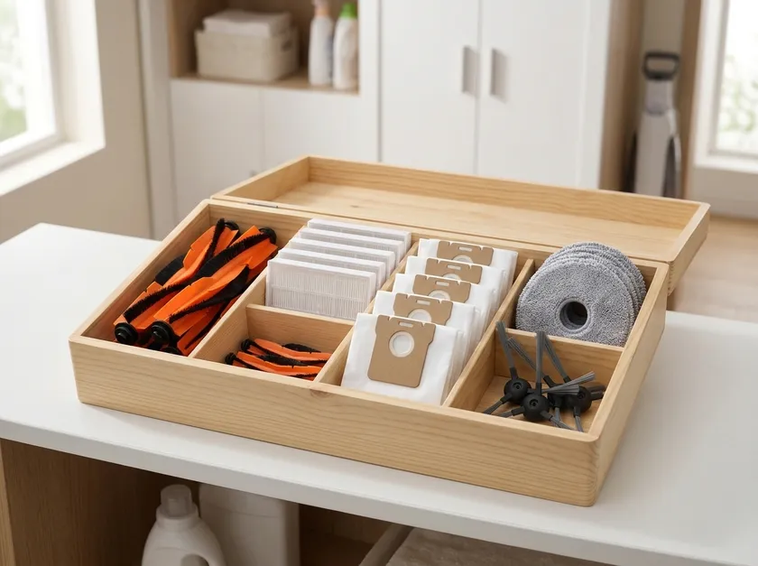
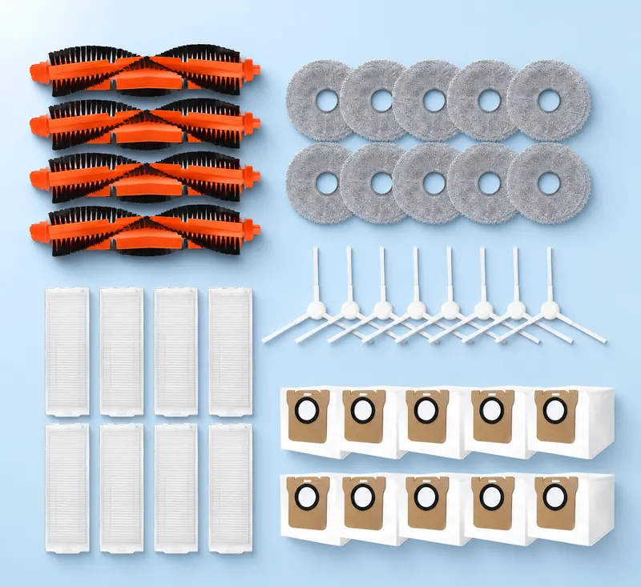

샤오미 (Xiaomi)
벽면 밀착 스윙 물걸레 쓰는 샤오미 미지아 M30S 패드 마모·브러시 점검법
글·구성: 제이상점 · 기종별 1:1 호환 실물 점검 · 교체 주기 비교표 · 스마트스토어 패키지 안내

핵심 관리 · 선택 체크포인트
- 걸레 암이 바깥으로 뻗어 걸레받이와 가구 모서리를 닦아내는 샤오미 미지아 M30S는 원형 물걸레 패드 가장자리 파일이 일반 기종보다
- 원형 걸레 패드 가장자리 파일 점검과 3암 사이드브러시 탄성 확인: 미지아 M30S의 원형 극세사 패드 테두리가 납작해지면 벽면 모서리 밀착력이 약해지므로, 1년 세트에 포함된 넉넉한 여분 패드로 제때 교대해 주는 것이 좋습니다.
- 샤오미 미지아 M30S 1년 소모품 패키지 핵심 점검표: 모서리 확장 청소 기종에서 특히 신경 써야 할 소모품 관리 기준입니다.
- 보유 기종이 샤오미 미지아 M30S인지 확인한 뒤 상세페이지에서 전용 세트를 선택해 주세요.
- 복도 콘솔 바구니 수납과 세탁실 트레이 사전 점검: 복도 콘솔 바구니나 원목 서랍 캐디에 예비 걸레 패드와 필터, 더스트백을 모아 두면 주말 5분 점검 때 필요한 부품을 즉시 꺼내 교체할 수 있습니다.
실물 부품 디테일 · 관리 구성 이미지




부품 규격 · 점검 기준표
| 부품 구분 | 샤오미 미지아 M30S 규격 | 모서리 청소 품질 유지 포인트 |
|---|---|---|
| 원형 회전 물걸레 패드 | 벨크로 부착식 도톰한 그레이 원형 패드 | 모서리 마찰이 많은 우측·좌측 패드를 주기적으로 교차·동시 교체 |
| 오렌지 메인·3암 사이드브러시 | V자 브러시 롤러 + 3갈래 사이드브러시 | 가구 모서리 회전 후 사이드브러시 모 휘어짐 및 축 머리카락 제거 |
| 화이트 프레임 필터·더스트백 | 직사각 헤파필터 + 크라프트 칼라 더스트백 | 필터 24시간 그늘 건조 교대 및 더스트백 슬롯 밀착 체결 |
💡 교체 주기가 겹치는 필터·브러시·물걸레·더스트백은 단품 배송비를 여러 번 내기보다 샤오미 미지아 M30S 기간별 세트(3개월·6개월·1년)로 미리 구비해 두면 물세척 후 24시간 교대 건조까지 끊김 없이 관리할 수 있습니다.
자주 묻는 질문 (FAQ)
Q. 샤오미M30S의 원형 회전 물걸레 패드 규격과 관리 기준은 무엇인가요?
A. 벨크로 부착식 도톰한 그레이 원형 패드 규격을 사용하며, 모서리 마찰이 많은 우측·좌측 패드를 주기적으로 교차·동시 교체 기준으로 점검·교체하면 청소 효율을 안정적으로 유지할 수 있습니다.
Q. 샤오미M30S의 오렌지 메인·3암 사이드브러시 규격과 관리 기준은 무엇인가요?
A. V자 브러시 롤러 + 3갈래 사이드브러시 규격을 사용하며, 가구 모서리 회전 후 사이드브러시 모 휘어짐 및 축 머리카락 제거 기준으로 점검·교체하면 청소 효율을 안정적으로 유지할 수 있습니다.
Q. 샤오미M30S의 화이트 프레임 필터·더스트백 규격과 관리 기준은 무엇인가요?
A. 직사각 헤파필터 + 크라프트 칼라 더스트백 규격을 사용하며, 필터 24시간 그늘 건조 교대 및 더스트백 슬롯 밀착 체결 기준으로 점검·교체하면 청소 효율을 안정적으로 유지할 수 있습니다.
제이상점 1:1 검수 추천 패키지 · 구매 안내
메인 추천 구성
대표 구성 참고가 69,250원대 (옵션·쿠폰별 스마트스토어 결제 화면 기준)
1년 세트 (세제 미포함)6개월 세트 (세제 미포함)3개월 세트 (세제 미포함)

함께 많이 찾는 보충 구성
대표 구성 참고가 73,330원대 (옵션·쿠폰별 스마트스토어 결제 화면 기준)
1년 세트 (세제 미포함)6개월 세트 (세제 미포함)3개월 세트 (세제 미포함)
☑️ 주문 전 확인해 두면 좋은 제이상점 안심 포인트
· 기종별 1:1 전용 규격 검수: 모델명·연식에 맞는 호환·정품 구성을 검수해 오주문 불안을 줄였습니다.
· 해외직배송 미리 주문 팁: 중국 구매대행·해외직배송 상품이므로 마지막 여분 1개를 꺼내 쓰는 시점에 개인통관고유부호와 함께 여유 있게 주문해 두시면 훨씬 경제적인 비용으로 끊김 없이 교체하실 수 있습니다.
· 기종별 1:1 전용 규격 검수: 모델명·연식에 맞는 호환·정품 구성을 검수해 오주문 불안을 줄였습니다.
· 해외직배송 미리 주문 팁: 중국 구매대행·해외직배송 상품이므로 마지막 여분 1개를 꺼내 쓰는 시점에 개인통관고유부호와 함께 여유 있게 주문해 두시면 훨씬 경제적인 비용으로 끊김 없이 교체하실 수 있습니다.
📖 더 많은 가정 내 사용 스토리와 상세 후기가 궁금하시다면
📱 네이버 블로그 모바일 원문 보기 ↗